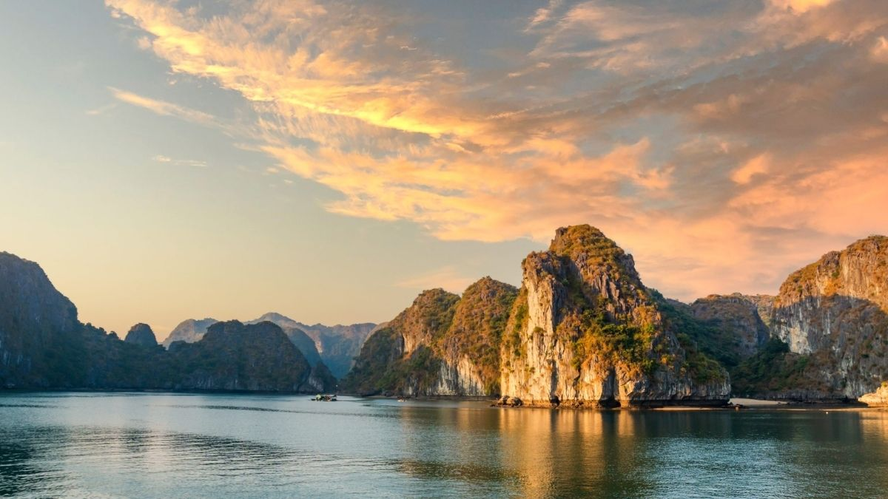
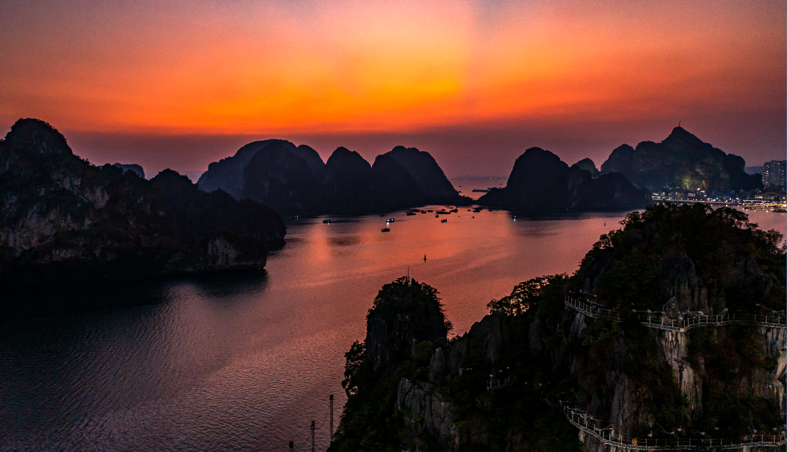
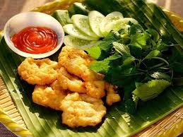
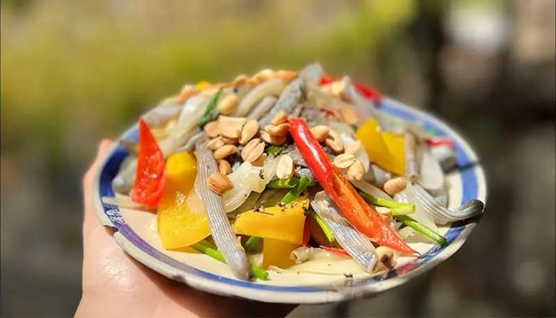

Nguồn: Halongbay.orgCảnh đẹp - Kỳ quan thiên nhiên thế giới
Vịnh Hạ Long như một bức tranh thủy mặc khổng lồ, với hàng nghìn đảo đá vôi nhô lên giữa mặt nước xanh biếc. Những hang động kỳ vĩ, vách đá cheo leo và rừng cây trên đảo tạo nên khung cảnh vừa hùng vĩ vừa nên thơ. Bình minh trên vịnh mờ ảo trong sương, còn hoàng hôn lại nhuộm cả mặt biển bằng những gam màu vàng đỏ rực rỡ. Làng chài nổi, những chiếc thuyền và sinh hoạt ngư dân làm cho Hạ Long vừa sống động vừa đậm đà bản sắc địa phương. Được UNESCO công nhận, Hạ Long là điểm đến lý tưởng cho những ai yêu thiên nhiên, thích khám phá và chụp ảnh.

Nguồn: VietnamtourismMón ngon - Đặc sản vùng biển
Ẩm thực ở Vịnh Hạ Long mang đậm hương vị biển cả với nguồn hải sản tươi ngon và phong phú. Các món đặc sản như chả mực, sá sùng, sam biển hay ngán được chế biến công phu, tạo nên hương vị riêng biệt khó quên. Hải sản ở đây thường được hấp, nướng hoặc nấu lẩu để giữ trọn vị ngọt tự nhiên. Không chỉ hấp dẫn về chất lượng, các món ăn còn góp phần làm phong phú thêm trải nghiệm của du khách khi đến tham quan vịnh. Tất cả đã tạo nên nét đặc trưng độc đáo cho ẩm thực Hạ Long.

Nguồn: DuLichHaLongHoạt động - Trải nghiệm trên vịnh
Vịnh Hạ Long không chỉ nổi tiếng bởi cảnh đẹp mà còn hấp dẫn với nhiều hoạt động vui chơi giải trí đa dạng:
- Chèo kayak khám phá các hang động nhỏ và vách đá.
- Lặn biển ngắm san hô và sinh vật biển phong phú.
- Tắm biển, tham gia các trò chơi trên bãi biển hoặc khám phá công viên giải trí ven bờ.
- Du thuyền ngủ đêm trên vịnh để ngắm bình minh trên biển.
- Tham quan các làng chài truyền thống để tìm hiểu đời sống ngư dân.
Những hoạt động này góp phần làm cho chuyến du lịch Hạ Long trở nên năng động và đáng nhớ hơn.

Nguồn: TripadvisorĐiểm đặc biệt ở Hạ Long 2026
Năm 2026, Vịnh Hạ Long ra mắt thêm nhiều sản phẩm du lịch mới theo hướng cao cấp và bền vững. Cảng tàu khách quốc tế được nâng cấp, đón thêm nhiều du thuyền sang trọng, mang đến trải nghiệm tham quan hiện đại hơn. Trên bờ, các khu vực như Bãi Cháy và Sun World xuất hiện nhiều góc check-in mới, thu hút du khách trẻ. Các tour ngủ đêm 5 sao và trải nghiệm văn hoá làng chài cũng được làm mới, tạo nên hành trình khám phá vừa tiện nghi vừa đậm bản sắc. Những thay đổi này giúp Hạ Long 2026 ngày càng hấp dẫn và năng động hơn.